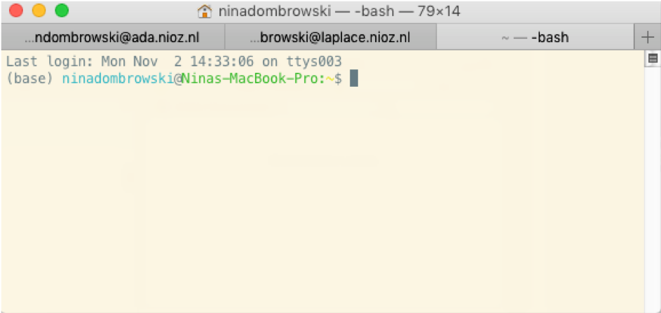
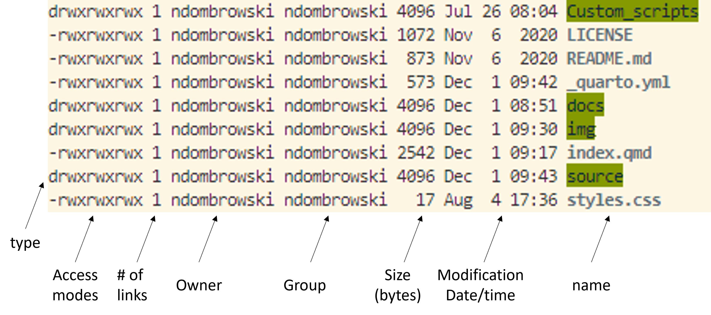
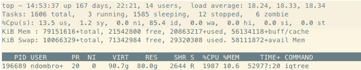
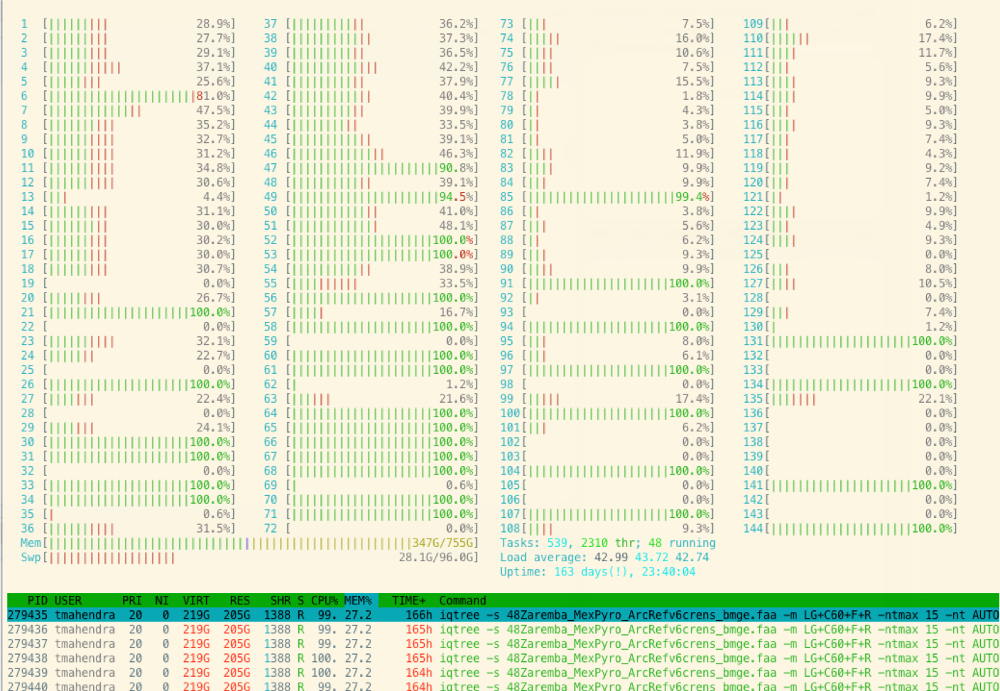
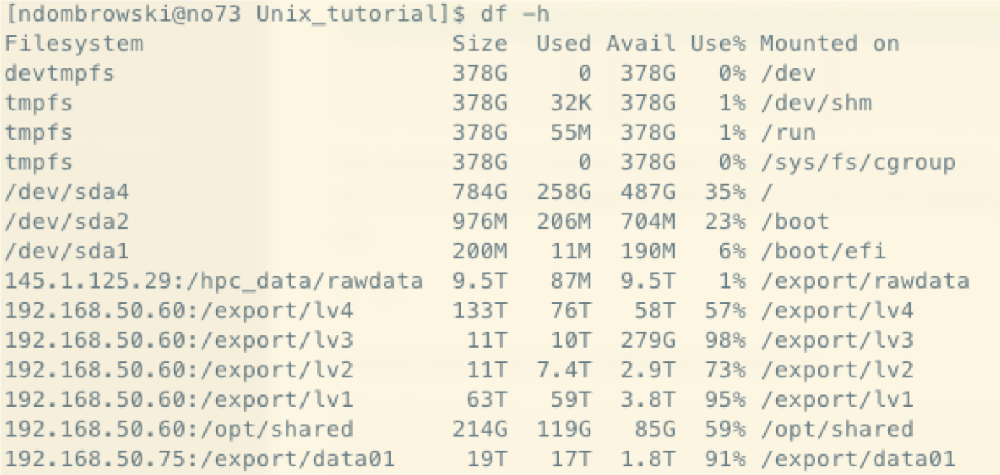
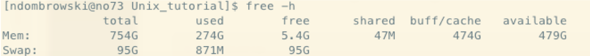

pwdUsing the command line
This page gives a basic introduction on how to use command line.
The Linux command-line interface (CLI) is an alternative to a graphical user interface (GUI) with which you are likely more familiar. Both interfaces allow a user to interact with an operating system. The key difference between the CLI and GUI is that the interaction with CLI is based on issuing commands. In contrast, the interaction with a GUI involves visual elements, such as windows, buttons, etc. CLI is often also referred to as the shell, terminal, console, prompt or various other names
Bash is a type of interpreter that processes shell commands. A shell interpreter takes commands in plain text format and calls the operating system to do something, for example changing a directory or modifying the content of some files. Bash itself stands for Bourne Again Shell and it is one of the popular command-line shells used to run other programs, many of which are useful for bioinformatic workflows.
Below you find a short introduction on using the Unix command-line interface Bash.
The shell on different operating systems
Below you find some links that help you in setting up a Bash command line depending on your operating system:
Linux
The default shell is usually Bash and there is usually no need to install anything to be able to follow this tutorial.
Mac
To access the Unix command prompt on a Mac operating system, open the Terminal application. It is located by default inside the Utilities folder, which in turn is inside the Applications folder, i.e., /Applications/Utilities/ folder. Alternatively, you can find the terminal application by using the spotlight search tool.
Windows
Operating systems like macOS and Linux come with a native command-line terminal, making it straightforward to run bash commands. However, for Windows users you need to install some software first to be able to use bash.
One option to access the bash shell commands is using Git Bash, for detailed installation instructions please have a look at the carpenties website.
A second option is Mobaxterm, which enables Windows users to execute basic Linux/Unix commands on their local machine, connect to an HPC with SSH and to transfer files with SCP/SFTP (more on that later). Installation instructions can be found here.
A final option is to use Windows and Linux at the same time on a Windows machine. The Windows Subsystem for Linux (WSL) lets users install a Linux distribution (such as Ubuntu, which is the default Linux distribution, which we recommend to use) and use Linux applications, utilities, and Bash command-line tools directly on Windows. This option allows you to use all the tools available but since you more or less are installing a separating system on your PC needs to have enough memory to run this. Installation instructions can be found here.
After you set everything up and opened a terminal you should see something like this and are good to go if you want to follow the tutorial:

The file system
Before getting started with the CLI, lets first understand the file system used by Unix, which might look some thing like this:

The Unix File System is a logical method of organizing and storing large amounts of information in a way that makes it easy to manage. Some key features are:
- Different to what you might be used to from Windows, Unix does not use Drives but apppears as a rooted tree of directories
- The first directory in the file system is called the root directory represented by
/
- Different storage devices may contain different branches of the tree, but there is always a single tree. e.g., /users/john/ and / users/mary/
pwd: Finding out where we are
Now that we know how the file system looks like, we do want to move around. Since we do not use a GUI we can not use the mouse to point and click but instead have to write down what we want to do.
pwd prints the location of the current working directory and basically tells you where exactly you are. Usually when we login we start from what is called our home directory. This generally will be something like /Users/username but might be slightly different depending on your operating system.
Now that we know where we are, let’s see how to move around by first seeing what other folders there are. For this we can use the ls command, which stands for list directory contents
lsIn my case this returns something like this:

This might look a bit different for your system in terms of color and file/folder names but what we basically see are the files (in bold text) and folders (green-highlighted text).
General structure of a Unix command
Next, let’s go into how commands, like ls can be used a bit more precisely. Let´s start with looking at the general structure of a command:
command [options] [arguments]
- command is the name of the command you want to use, i.e.
lswould be an example for a very basic Unix command - arguments is one or more adjustments to the command’s behavior. I.e. for
lswe could use the following arguments- Short notation:
-a - Long notation:
—all
- Short notation:
Let’s explore more about how to use this arguments in the next section.
Viewing what files, folders, etc are present in our directories
Let’s look a bit closer into the ls command and use it with an argument -l.
As a reminder:
lsstands for list directory contents- everything starting with a minus symbol is an optional argument we can use
-lis an additional argument we can use that makes ls use a long listing format
ls -lAfter running this, we should see our files and folders but in what is called the long format (which gives way more information):

If you are unsure what options come with a program its always a good idea to check out the manual. You can do this with:
man lsYou can exit the manual by pressing q.
In case you want to check what a program does or what options there are, depending on the program there might be different ways how to do this. These most common ways are:
man lsls --helpls -h
cd: Moving around folders
Next, lets move around these folders using the cd command, which let’s you change the directory. If you run this on your computer exchange source to a folder name that you see when using ls. If there are no directories, we will explain a bit later how to generate new directories.
cd source/If you use pwd afterwards, then you should see that we moved into another directory. We can also move back to our orginal directory as follows:
cd ..We can also move around multiple levels for example here i am going into the source folder, then back to the home directory and then into the docs folder.
cd source/../docsAnother useful way to move around quickly is using the tilde symbol, i.e. ~, that can be used as a shortcut to move directly into our home directory:
cd ~Pathnames
Next, let’s discuss an important distinction between absolute and relative pathnames.
Absolute pathnames
An absolute pathname begins with the root directory and follows the tree branch by branch until the path to the desired directory or file is completed. For example on your computer full path to our Desktop might be /Users/username/Desktop
If we want to go to the desktop using an absolute path we do the following:
cd /Users/username/DesktopRelative pathnames
A relative pathname starts from the directory you are currently in and you traverse to other directories relative from this directory. When using the relative pathway allows you to use a couple of special notations to represent relative positions in the file system tree.
.(dot) The working directory itself..(dot dot) Refers to the working directory’s parent directory
If we want to go to the source dir using an relative path we do the following (again change this to whatever folder you see when using ls):
cd DesktopMaking new folders
Now that we know how to explore our surroundings, let us make a new folder in which we can generate some new files later on. For this we use the mkdir command.
To do this, we will first move into our home directory and create a new folder from which we later run all further commands
#go into the folder from which you want to work (i.e. the home directory)
cd ~
#make a new folder (in the directory we currently are in, name it new_older)
mkdir playground
#check if new folder was generated
ls
#next we move into the newly generated folder
cd playgroundGenerating and viewing files
Important
Ensure that you run the following steps while being in the playground folder you just generated.
Now, let’s make some files of our own using nano. Nano is a basic text editor that lets us view and generate text.
#ensure that we work in the right folder
pwd
#open a new document and name it random.txt
nano random.txtOnce we type nano random.txt and press enter then a text document will open. In there:
- Type something into this document
- Close the document with
control + X - Type
yto save changes and press enter
If we now use ls -l again, we see that a new file was generated.
We can use nano to open whatever document we want, but for larger files it might take a long time to read everything into memory. For such cases, let’s look at some alternative text viewers.
less
less is a program that lets you view a file’s contents one screen at a time. This is useful when dealing with a large text file because it doesn’t load the entire file but accesses it page by page, resulting in fast loading speeds.
less random.txtOnce started, less will display the text file one page at a time.
- You can use the arrow Up and Page arrow keys to move through the text file
- To exit less, type
q
For files with a lots of columns or long strings we can use:
less -S random.txtIn this mode we can also use the arrow right and left keys, to view columns that are further on the right.
head
Another, very quick way to check the first 10 rows is head:
head random.txttail
If you want to check the last 10 rows use tail
tail random.txtI/O redirection to new files
By using some special notations we can redirect the output of many commands to files, devices, and even to the input of other commands.
Standard output (stdout)
By default, standard output directs its contents to the display, i.e. when we use ls the list of files and folders is printed to the screen. However, we can also redirect the standard output to a file by using > character is used like this:
#redirect the output from ls to a new file
ls -l > file_list.txt
#check what happened (feel free to also use the other methods we have discussed)
nano file_list.txtIf we would use ls -l > file_list.txt again we would overwrite the content of any existing files. However, there might be instances were we want to append something to an existing file. We can do this by using >>:
ls -l >> file_list.txt
#check what happened
nano file_list.txtMoving and copying files
Next, let’s move the text file we generated before around. To do this, we mainly need two commands:
cp- copy files and directoriesmv- move or rename files and directories
#make a new folder
mkdir our_files
#copy our random file into our new folder
cp random.txt our_filesIf we check the content of our working directory and the newly generated folder after doing this, we should see that random.txt exists now twice. Once in our working directory and once in the our_files folder. If we want to move a file, instead of copying, we can do the follwoing:
#copy our random file into our new_folder
mv random.txt our_filesNow, random.txt should only exist once in the our_files folder.
Removing files and folders
To remove files and folders, we use the rm command. Let’s first remove the text file we generated:
#rm a file
rm our_files/random.txt
#check if that worked
ls -l our_filesIf we want to remove a folder, we need to tell rm that we want to remove folders using an argument. To do this, we use the -r argument (to remove directories and their contents recursively).
Warning
Unix does not have an undelete command.
Therefore, if you delete something with rm, it’s gone.
So use rm with care and check what you wrote twice before pressing enter!
#rm a directory
rm -r our_files
#check if that worked
ls -lDownloading data
Next, let’s download some data to learn how to manipulate files. One way to do this is using the wget. With -P we specify were to download the data:
#make a folder for our downloads
mkdir downloads
#download a genome from ncbi using wget
wget -P downloads ftp://ftp.ncbi.nlm.nih.gov/genomes/all/GCA/002/728/275/GCA_002728275.1_ASM272827v1/GCA_002728275.1_ASM272827v1_genomic.fna.gzFile compression
Compressing data using gzip
After downloading and exploring the content of the downloads folder, you see that the file we downloaded ends with gz. This indicates that we work with a gzip-compressed file. Gzip is a tool used to compress the size of files.
In order to work with files, we sometimes need to de-compress them first. We can do this as follows (by using the decompress, -d argument):
#decompress gz data (-d = decompress)
gzip -d downloads/GCA_002728275.1_ASM272827v1_genomic.fna.gzConversely, if you want to compress a file, you can do this as such:
#compress
gzip downloads/GCA_002728275.1_ASM272827v1_genomic.fnaCompressing data using tar
Another file compression you might encounter is tar:
- Short for Tape Archive, and sometimes referred to as tarball, is a file in the Consolidated Unix Archive format.
- The TAR file format is common in Unix and Unix-like systems when storing data (however, we do not compress our files when using the tar files)
- TAR files are often compressed after being created and then become TGZ files, using the tgz, tar.gz, or gz extension.
Let’s try to make a compressed tarball with the file we just downloaded.
#decompress gz data
gzip -d downloads/GCA_002728275.1_ASM272827v1_genomic.fna.gz
#create a tar file, to_compress.tar.gz, from our downloads directory
tar -cvzf to_compress.tar.gz downloadsIf we print the content of our working directory with ls we now see an additional file, to_compress.tar.gz. We can uncompress this file into a new folder as follows:
#make a folder into with to compress the data
mkdir to_compress
#decompress
tar -xvf to_compress.tar.gz -C to_compress
#check what happened
ls to_compressWe can see that there is one folder in to_compress, our downloads folder.
Basic bash commands
Next, let’s go through some basic bash commands that are extremely useful when working with files. To this, let’s first download some example files to use.
wget -P downloads https://raw.githubusercontent.com/ndombrowski/Unix_tutorial/main/Input_docs/Experiment1.txt
wget -P downloads https://raw.githubusercontent.com/ndombrowski/Unix_tutorial/main/Input_docs/Experiment2.txt
wget -P downloads https://raw.githubusercontent.com/ndombrowski/Unix_tutorial/main/Input_docs/Experiment3.txt
wget -P downloads https://raw.githubusercontent.com/ndombrowski/Unix_tutorial/main/Input_docs/PF00900.faa
wget -P downloads https://raw.githubusercontent.com/ndombrowski/Unix_tutorial/main/Input_docs/PF01015.faa
#check if this worked
ls downloads/The content of the files is not super important but the text files are metadata files recording some data from a growth experiment and the files look something like this:
| Ex1 | control1 | 0.2 | 0.3 | #Ex1_all_good |
| Ex1 | control2 | 0.3 | 0.1 | #all_good |
| Ex1 | N[0.4uM] | 10.1 | 4.7 | #contamination |
| Ex1 | N[0.4uM] | 5.2 | 4.3 | #all_good |
The faa files are a file type you might encounter when working with molecular data. The FASTA format is a text-based format for representing either nucleotide sequences or amino acid (protein) sequences, in which nucleotides or amino acids are represented using single-letter codes. A sequence begins with a greater-than character (>) followed by a description of the sequence (all in a single line). The lines immediately following the description line are the sequence representation, with one letter per amino acid or nucleic acid, and are typically no more than 80 characters in length.
>GCA_000007185
MVRDKWKDKVWYTILAPDMFDNVEVGETPADDPEKVIGRVLETTLGDVLDDITKHHIKVFFRIYDVEGTTAYSKFEGHRLMRDYVRSLVRRGTSRIDGVIDVVTKDGYKVRVAGLAFTTRRAKTSQQRAIRKEMFKVIEENAKECDFDEFIRRCLSISEEESIPEQIKEAGRKIYPIRQAEIRKTEVLEEPNGLPPYEAVGDRATPELASY
>GCA_000007305
MAAKRATTTRDKWKLKQWYIIIn your case you will look at two protein fasta files in which the header contains the information from what genome, i.e. GCA_000007185, a sequence was extracted from as well as the acutal sequence itself.
wc: Counting files
The wc (= wordcount) command in UNIX is a command line utility that:
- Can return the number of lines, the number of characters and the number of words in a file
- Can be combined with pipes for general counting operations. We will explain pipes a bit later
The following commands are simple but essential for quality control and you will use it a lot to check whether your commands worked all right.
#count how many words we have
wc -w downloads/Experiment1.txt
#count how many lines we have in a file we have
wc -l downloads/Experiment1.txtgrep: Finding patterns in files
The grep command is used to search text. It searches the given file for lines containing a match to the given strings or words. Also this command is simple but very useful for sanity checks after file transformations.
#count how often the pattern **control** occurs in our document
grep "control" downloads/Experiment1.txt
#only give the counts, not the lines
grep -c "control" downloads/Experiment1.txt
#grep a pattern only if it occurs at the beginning of a line
grep "^Ex" downloads/Experiment1.txt
#we can also count the number of sequences in the fasta file we downloaded before
grep -c ">" downloads/*faaUsing wildcards
Since the shell uses filenames so much, it provides special characters to help you rapidly specify groups of filenames.
A Wild-card character can be used as a substitute for any class of characters in a search.
- The
*wildcard is the wildcard with the broadest meaning of any of the wildcards, it can represent 0 characters, all single characters or any string of characters. I.e. we can grep for something in any files that end with .txt as follows:
grep -c "Ex" downloads/*txt- The
?wildcard matches exactly one character but will ingore files that start with a dot. We could use it as follows:
grep "control" downloads/Experiment?.txt- [012] wildcard = matches 0 or 1 or 2 exactly once
grep "control" downloads/Experiment[012].txt- [0-9] wildcard = matches matches any number exactly one
grep "control" downloads/Experiment[0-9].txt- combining wildcards
- [A-Z] wildcard = any letter in capitals occurring once
- [a-z]* wildcard = any letter in non-capital letters occurring many times
grep "control" downloads/[A-Z][a-z]*[12].txt- [a-z]{7} we are exactly looking for 7 letters (as in ‘control’)
- these 7 letters should be followed by either a 1 or 2
grep "[a-z]\{7\}[12]" downloads/Experiment[12].txt- if we are not sure how many characters we have
- matches 3-10 characters
grep "[a-z]\{3,10\}[12]" downloads/Experiment[12].txtIf you use grep with special symbols you might notice something:
#this does not work
grep "control?" downloads/Experiment1.txt
#this works how we want it to work
grep -E "control?" downloads/Experiment1.txt-Etells grep that the ‘?’ is not taken literally but as a wildcard
Unfortunately different programs have slightly ways to do things, i.e greop uses -E while sed uses different quotes. If you run into problems when using wildcards check the manual or the web.
Exercise
- In the faa files, how many sequences do we have? Notice, sequences always start with a
> - In the faa files, how often do we have 3 consecutive A’s?
- In the faa files, how often do we have 2x A’s followed by a T?
- In the faa files, how often do we have 2x M’s followed by a T or followed by a D?
Comment: If you unsure what is happening remove the -c to see what grep is grepping.
Show the code
#question1:
grep -c ">" downloads/*.faa
#question2
grep -c "[A]\{3\}" downloads/*.faa
#question4
grep -c "[A]\{2\}[T]" downloads/*.faa
#question5
grep -c "[A]\{2\}[TC]" downloads/*.faaHint: if you are unsure what is happening, redo the command without the -c option
Cat: Combining data
The cat command has three main functions related to manipulating text files:
- Create a new file using cat. To do this type the command below, then type
Hello!press enter, and *Press “ctrl+c” to save the file:
cat > downloads/file_test.txt- Display the content of an existing file:
cat downloads/file_test.txt- Concatenate, i.e. combine, several files:
#merge files
cat downloads/file_test.txt downloads/file_test.txt > downloads/file_merged.txt
#check the content of the file
cat downloads/file_merged.txtExercise
- View the content of downloads/Experiment1.txt by using cat
- Combine downloads/Experiment1.txt and downloads/Experiment2.txt.
- Do the same as above but use a wildcard to not have to type everything and store the output as
downloads/Experiments.txt
Show the code
#question1
cat downloads/Experiment1.txt
#question3
cat downloads/Experiment1.txt downloads/Experiment2.txt
#question3
cat downloads/Experiment*.txt > downloads/Experiments.txtPipes: Combining commands
Pipes are a powerful utility to connect multiple commands together. They allow us to feed the standard output of one command as input into another command.
In the example below we first combine two files using cat and use wc -l on the standard output to count the number of lines after concatenating the two files:
cat downloads/Experiment[12].txt | wc -lExercise
- Using a pipe, combine the two faa files and count the total number of sequences using grep:
Show the code
#question1
cat downloads/*faa | grep -c ">"The cut command
We can use cut to separate columns. By default cut uses a tab as a delimiter. We could print the first colummn of our data as follows:
cut -f1 downloads/Experiment1.txtOr if we only want to get the second column we do this:
cut -f2 downloads/Experiment1.txtIf we wanted to get columns 1 and 2 we do:
cut -f1-2 downloads/Experiment1.txtWe can also change how we cut, i.e. we could cut after a # by using the -d argument:
cut -f1 -d "#" downloads/Experiment1.txtExercise
- In PF00900.faa, we want to shorten the fasta header. To do this cut the text of after the first underscore
_(i.e. keep only the first element). Combine this with the head command to only view the first few lines and see if your command worked. - In PF00900.faa, cut to only keep the text after the first
_(i.e. keep the second element). Again, combine this with the head command.
Show the code
#question1
cut -f1 -d "_" downloads/PF00900.faa | head
#question2
cut -f2 -d "_" downloads/PF00900.faa | headBe careful when using the second options, as this will cut away the > symbol that we need in fasta files to define the header. I.e. fasta headers always should start with this symbol and if we would use such a command we would need the > back in/
sort: sorting files
sort – sort lines in a file from A-Z and is useful for file organization. We can sort files like this:
sort downloads/Experiment2.txtSort by default sorts from left to right, but we also can sort based on a specific column, for example column 4:
sort -k4 downloads/Experiment2.txtWe can also sort by more than one column, i.e. column 5 followed by column 3:
sort -k5 -k3 downloads/Experiment1.txtuniq: Finding duplicated data
uniq – can be used to remove or find duplicates . However, for this to work the file first needs to be sorted. To do this, we can make use of pipes. Lets, start of by extracting the observations we made with cut:
cut -f5 downloads/Experiment1.txtWe then can sort the column by adding a pipe:
cut -f5 downloads/Experiment1.txt | sortAnd only print unique observations with uniq:
cut -f5 downloads/Experiment1.txt | sort | uniqIf we where interested in duplicated observations, we can add the -d argument:
cut -f5 downloads/Experiment1.txt | sort | uniq -dCheck out the manual for more options!
Exercise
- Using a pipe: combine the faa files. How many sequences do we have in total?
- Using a pipe: combine the faa files. Extract only the header and then count how many duplicates do we have?
- Same as above, but how many sequences are not duplicated? Check the manual for uniq on what option allows you to do this.
Show the code
#question1
cat downloads/*faa | grep -c ">"
#question 2
cat downloads/*faa | grep ">" | sort | uniq -d | wc -l
#question 3
cat downloads/*faa | grep ">" | sort | uniq -u | wc -l find
find searches through the directories for files and directories with a given name, date, size, or any other attribute you care to specify.
#find all files with a txt extension
find downloads/ -name "*txt"
#find files over a certain size and display results as a long list
find downloads/ -size +1M -lsSED: manipulating files
Sed is a stream editor that can be used to perform basic text transformations on an input stream (a file or input from a pipeline).
The most basic pattern to use sed for is sed ‘s/find/replace/’ file.
Basics: search and replace
Let’s go back to our text files and assume that instead of writing Ex we want to be more clear and write Experiment, we can do this as follows:
sed 's/Ex/Experiment/' downloads/Experiment1.txt When doing this, we see that:
- Ex only gets replaced the first time it appears in a line, ie. the #Ex1_all_good in the first line gets not replaced
- sed will not overwrite the input file (unless you tell it to do so) but it will print the changed to the screen. If we wanted to save this in a file, we would need to re-direct the output to a new file.
To change all instances of Ex, we can do the following:
sed 's/Ex/Experiment/g' downloads/Experiment1.txt Sed can be easily used with wildcards. For example, if you would want to replace control1 and control2 just with control you could do:
sed 's/control[0-9]/control/g' downloads/Experiment1.txt One important thing to remember is that certain symbols have specific meanings in UNIX. Examples are: comma, brackets, pipes. Do search for these in files, we need to escape them with a \. For example, we could replace the square with round brackets as follows:
#replace the square bracket with a round bracket.
sed 's/N\[0.4uM\]/N(0.4uM)/g' downloads/Experiment1.txt Exercise
- In downloads/PF00900.faa , replace the GCA_ with Genome_
- In downloads/PF00900.faa , use wildcards to replace the string of numbers after the GCA with a
hello
Show the code
#qst 1
sed 's/GCA_/Genome_/g' downloads/PF00900.faa
#qst 2
sed 's/GCA_[0-9]*/GCA_hello/g' downloads/PF00900.faa Removing things (and using WILDCARDs)
Sed can also be used to remove things, such as line(s) or patterns. Below is a list of examples that you might encounter or find useful.
# remove 1 first line
sed '1d' downloads/Experiment1.txt
#remove last line
sed '$d' downloads/Experiment1.txt
#remove lines 2-4
sed '2,4d' downloads/Experiment1.txt
#remove lines other than 2-4
sed '2,4!d' downloads/Experiment1.txt
#remove the first and last line
sed '1d;$d' downloads/Experiment1.txt
#remove lines beginning with an **L**
sed '/^L/d' downloads/Experiment1.txt
#delete lines ending with d
sed '/d$/d' downloads/Experiment1.txt
#delete lines ending with d OR D
sed '/[dD]$/d' downloads/Experiment1.txt
#delete blank lines ('^$' indicates lines containing nothing, i.e. lines with zero or more spaces)
sed '/^$/d' downloads/Experiment1.txt
#delete lines that start with capital letters
sed '/^[A-Z]/d' downloads/Experiment1.txt
#delete lines with the pattern **Ex**
sed '/Ex/d' downloads/Experiment1.txt
#delete files with the pattern control or uM
sed '/control\|uM/d' downloads/Experiment1.txt
#delete the 2nd occurence of each pattern per line (here *o*)
sed 's/o//2' downloads/Experiment1.txt
#remove all digits across the whole file
sed 's/[0-9]//g' downloads/Experiment1.txt
#remove all alpha-numerical characters and numbers
sed 's/[a-zA-Z0-9]//g' downloads/Experiment1.txt
#remove character, here E, regardless of the case
sed 's/[eE]//g' downloads/Experiment1.txtUsing a screen
Screen or GNU Screen is a terminal multiplexer. This means that you can start a screen session and then open any number of windows (virtual terminals) inside that session. Processes running in Screen will continue to run when their window is not visible even if you get disconnected This is perfect, if we start longer running processes on the server and want to shut down our computer when leaving for the day. As long as the server is still connected to the internet, your process will continue running.
We start a screen as follows:
screenWe detach, i.e. exit, from a screen with control+a+d.
If you run multiple things, it can be useful to give your screens more descriptive names. You can do this as follows:
#start a screen and give it a name
screen -S testrunAfter detaching from a screen you can list all currently running screens with:
screen -lsYou can restart a screen like this:
#restart an existing screen
screen -r testrunIf you want to completely close and remove a screen, type the following while being inside of the screen:
exitRunning loops
echo/printf
echo displays a line of text that can be printed to the screen or stored in a file (why this is useful you see in a second):
Both echo and printf print something into the console. However, echo uses different versions across shells, so you might get slighly different outputs depending on the shell you use. Printf is more portable and allows for more formatting options. You might encounter both when finding code in the wild.
#print a string to the console using echo
echo "Hello everyone"
#print a string to the console using printf
printf "Hello everyone"For-loops
A for loop is a bash programming language statement which allows code to be repeatedly executed. I.e. it allows us to run a command 2, 3, 5 or 100 times.
Try running this example in which we want to say hello several times:
for i in 1 2 3; do echo "Welcome $i times"; doneHere, you see what this command does step by step:

We could also use a loop to run sed on all our txt files. For example assume that instead of nitrogen (N) we measured sulfur (s) we could replace it among all text files as follows:
#change the N for P in all our files
for i in downloads/*txt; do sed 's/N/S/g' $i; done

If we want to store the output in new files, we could store them with a slightly different name as follows:
for i in downloads/*txt; do sed 's/N/S/g' $i > ${i}_2.txt; done
#check that all went alright with
ll downloads/*txtYou see here, that we added curly brackets to define the borders of our variable i. I.e. if we would not have the brackets unix would look for a variable i_2, which does not exist.
You will also see that the name of the output file is not ideal, i.e. it is something like downloads/Experiment3.txt_2.txt. To get more control over the name of the output files we can use a file list for building the loop.
To do this let’s use printf to generate a FileList in which list the the two files we want to work with: Experiment1 and Experiment2. We do this using printf and \n, which is a special character we can use to separate Experiment1 and Experiment using a new line.
printf "Experiment1\nExperiment2" > downloads/FileList
#view file
head downloads/FileListNow we can use this file to run our loop.
for i in `cat downloads/FileList`; do sed 's/N/S/g' downloads/${i}.txt > downloads/${i}_2.txt; done
#check that all went alright with
ll downloads/*txtNotice, that using this option we need to add the file extension! However, the resulting filenames, i.e. downloads/Experiment2_2.txt, are much cleaner.
Exercise
- Make a list with all the faa files (do this with the command line). Ideally, we want to have PF00900 and PF01015 in one column. For this you want to list the names of all faa files but at the same time remove the file extension and the folder name.
- Use this list to, in a loop, replace the GCA_ with Genome_. Store the files with the new ending
renamed.faa
Show the code
#question1
ls downloads/*faa | sed 's/downloads\///g' | sed 's/\.faa//g' > downloads/FaaList
#question2
for sample in `cat downloads/FaaList`; do sed 's/GCA_/Genome_/g' downloads/${sample}.faa > downloads/${sample}_renamed.faa; done
#check file
head downloads/PF00900_renamed.faaConnecting to severs
Basics
SSH (Secure Shell) is a network protocol that enables secure remote connections between two systems.
Options:
-Yoption enables trusted X11 forwarding in SSH (if we want to open i.e. a java interface, or view alignments). For this to work you might need to install X11 on your computer first. Trusted means: the remote machine is treated as a trusted client. This means that other graphical (X11) clients could take data from the remote machine (make screenshots, do keylogging and other nasty stuff) and it is even possible to alter those data.-Xoption enables untrusted X11 forwarding in SSH. Untrusted means = your local client sends a command to the remote machine and receives the graphical output
#connect to a server
ssh -X username@serverChecking available resources
When working on an HPC keep in mind that you share resources with a lot of other users:
- Always read the documentation to get comfortable with using the system
- Keep in mind that we share resources with many other researchers, so schedule jobs sensibly
- For crunchomics there are the following rules:
- DO NOT run multicore programs on the head-node (omics-h0 for crunchomics), use the compute nodes
- Don’t allocate more than 20% (cpu or mem) of the cluster for more than a day
- Do not leave allocations unused and set reasonable time limits on you jobs
There are different methods we have to check how busy the servers are. This is a good thing to do, do judge how many resources you yourself can use. For running small things on the head node you can use:
top
Typing top into the terminal should give something like this:

The different IDs stand for:
- PID: Unique process id.
- USER: Task’s owner.
- PR: It is the priority of the task.
- NI: The nice value of the task. A negative nice value means higher priority,whereas a positive nice value means lower priority.
- VIRT: Total amount of virtual memory used by the task.
- RES: Resident size, the non-swapped physical memory a task has used.
- SHR: Shared Mem size (kb), the amount of shared memory used by a task.
- %CPU: It shows the CPU usage as a percentage of total CPU time.
- %MEM: It shows the Memory usage, a task’s currently used share of available physical memory.
- as a rule of thump in the example above the first process uses 1492/100 = so roughly 15 of the 144 avail. cpus
- S: Status of the process
- TIME+: CPU Time
- COMMAND: Display the command line used to start a task or the name ofthe associated program.
htop
Htop gives similar info to top but allows to access how many CPUs and how much mem is used in total a bit easier:

The numbers from 1-144 are our 144 CPUs and the fuller the bar is, the more of a single CPU is currently in use. This is also summarized under tasks. Another important line is the memory listing how much in total of the avail. memory is in use.
df
df monitors the available space on the different file systems.

free
Monitor avail. memory on the different file systems.

We can see that lv3, where scratch is, is almost full. So it is a good point to do data cleaning.
du
Monitor`s how much space specific folders take up. In the example below we look at all the folders in the Desktop folder.
du -sh Desktop/Transferring data from/to a server
Note: If transferring data the transfer is prepared from the terminal of your local computer. There are filetransfer systems that can make the job easier, i.e. FileZilla. If you do not have a file transfer system, you can also transfer files via the command line using scp
#copy a File from your local pc to server
scp File username@server:/HomeDir
#from server to local
scp username@server:/HomeDir/File DesktopWorking on a server via slurm
On crunchomics we can not directly run larger jobs on the headnode (i.e. where you login) but we need to submit them via a job submission system called slurm.
Slurm has three key functions.
- It allocates exclusive and/or non-exclusive access to resources (compute nodes) to users for some duration of time.
- It provides a framework for starting, executing, and monitoring work (normally a parallel job) on the set of allocated nodes.
- It arbitrates contention for resources by managing a queue of pending work
Below you find some basic information on how to use Slurm on Crunchomics, for more information, visit the crunchomics website.
Viewing available resources
sinfo can be used to information about the cluster: node names, state, partition (queue). Here:
- partition: the queues that are available
- state: idle (available for jobs), mix (partly available), down etc. Slurm codes
- node list: the names of the nodes omics-cn001 to omics-cn005
squeue can be used to view information about jobs in the queue
Preparing a job script
To submit a job we can do this with a job script. To do this, we need to open a document in nano and describe what resources we need, i.e. with
nano jobscript.shInside the script we can have something written like this:
#!/bin/sh
#SBATCH --partition=normal # default "normal", if not specified
#SBATCH --nodelist=no1 # the node we want to work on
#SBATCH --time=0-06:30:00 # run time in days-hh:mm:ss
#SBATCH --nodes=1 # require 1 node
#SBATCH --ntasks-per-node=36 # (by default, "ntasks"="cpus")
#SBATCH --mem-per-cpu=4000 # MB RAM per CPU core (default 4 GB/core)
#SBATCH --error=job.%J.err
#SBATCH --output=job.%J.out
# Executable commands :
iqtree -s my_aln.faaThe most important things are
- the partition, esp. for jobs that run longer
- the node we want to work on, i.e. only some allow for longer running jobs
- the number of nodes, we usally use one for our jobs
- –error and –output are good to keep in case you ran into problems
Not absolutely necessary (at least on the NIOZ system but might be on other systems)
- time = not necessary for the NIOZ server, just make sure you are in the max limit
- mem-per-cpu
- nodes = not needed if you use nodelist
basic commands for slurm:
#submitting your job
sbatch jobscript.sh
#checking for running jobs
squeue
#kill a job incase sth is wrong (the job ID you can find via squeue)
scancel job#Random but useful
The code below is a random collection of code the author found useful. This means it might be interesting for you BUT these are so far not linked to example files and some programs might not be avail. on ada.
Escaping characters
Certain characters are significant to the shell; Escaping is a method of quoting single characters. The escape (\) preceding a character tells the shell to interpret that character literally. Below, we find the special meanings of certain escaped characters:

Excel/DOS to UNIX issue cleanup
- hidden symbols
Sometimes when saving excel documents as text this insert hidden symbols. These can be seen as a blue M when opening the file in vim (sometimes they result in odd errors while parsing tables). Most often you see these issues when you open your files and lines are merged that should not be merged.
This symbol can be removed as follows in vim:
:%s/\r/\r/g to remove blue M- wrong file types
Files created on WINDOWS systems are not always compatible with UNIX. In case there is an issue it is always safer to convert. You see if you have an issue if you open your file of interest with nano and check the file format at the bottom.
If we see we are dealing with a dos file, we can clean files like this:
#dos to unix
awk '{ sub("\r$", ""); print }' winfile.txt > unixfile.txt
#unix to dos
awk 'sub("$", "\r")' unixfile.txt > winfile.txtdatamash: merging rows by keys
GNU datamash is a command-line program which performs basic numeric, textual and statistical operations on input textual data files.
datamash -sW -g1 collapse 2 collapse 4 < Unimarkers_KO_count_table.txt > Unimarkers_KO_collapsed.txtUsing environmental variables
Simply put, environment variables are variables that are set up in your shell when you log in. They are called “environment variables” because most of them affect the way your Unix shell works for you. I.e. one points to your home directory and another to your history file.
#list of avail. variables
env | sort | head -10
# show where variables are stored
echo $PATH
# change location of variables
export HOME=/home/shs
#change path of environmental varialbes
PATH=~/bin:$PATH:/apps/binDealing with PDFs –> CPDF
CPDF is a useful program if you want to merge pdfs, remodel them all to A4 etc.
This is not available on the server but easy to install in case you are interested.
For more information, see here
# merge pdfs
~/Desktop/Programs/cpdf-binaries-master/OSX-Intel/cpdf -merge *pdf -o All_Main_Figs.pdf
#convert to A4
~/Desktop/Programs/cpdf-binaries-master/OSX-Intel/cpdf -scale-to-fit a4portrait SI_Figures.pdf -o test.pdfAccesss rights
Each file (and directory) has associated access rights, which may be found by typing ls -l. Also, ls -lg gives additional information as to which group owns the file
ls -lg downloads/Experiment1.txt -rw-r--r-- 1 staff 156B Sep 28 2019 downloads/Experiment1.txt
In the left-hand column is a 10 symbol string consisting of the symbols d, r, w, x, -, and, occasionally, s or S. If d is present, it will be at the left hand end of the string, and indicates a directory: otherwise - will be the starting symbol of the string.
The 9 remaining symbols indicate the permissions, or access rights, and are taken as three groups of 3.
- The left group of 3 gives the file permissions for the user that owns the file (or directory)
- the middle group gives the permissions for the group of people to whom the file (or directory)
- the rightmost group gives the permissions for all others.
The symbols r, w, etc., have slightly different meanings depending on whether they refer to a simple file or to a directory.
Access rights on files.
- r (or -), indicates read permission (or otherwise), that is, the presence or absence of permission to read and copy the file
- w (or -), indicates write permission (or otherwise), that is, the permission (or otherwise) to change a file
- x (or -), indicates execution permission (or otherwise), that is, the permission to execute a file, where appropriate
Access rights on directories.
- r allows users to list files in the directory;
- w means that users may delete files from the directory or move files into it;
- x means the right to access files in the directory. This implies that you may read files in the directory provided you have read permission on the individual files.
So, in order to read a file, you must have execute permission on the directory containing that file, and hence on any directory containing that directory as a subdirectory, and so on, up the tree.
Changing access rights
chmod= changing a file mode
Chmod options:
u = user g = group o = other a = all r = read w = write (and delete) x = execute (and access directory) + = add permission - = take away permission
For example, to remove read write and execute permissions on the file example.txt for the group and others, type
chmod go-rwx example.txt Counting things in a large number of files
Here: Find all files that start with *DN** and have a *codon** in them. Once you have these files grep the number of sequences in each file.
find . -maxdepth 6 -name 'DN*codon*' -exec grep -c -H ">" {} \; > Count_hits.txt